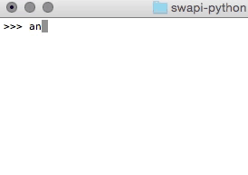

Welcome to the swapi, the Star Wars API! This documentation should help you familiarise yourself with the resources available and how to consume them with HTTP requests. If you're after a native helper library then I suggest you scroll down and check out what's available. Read through the getting started section before you dive in. Most of your problems should be solved just by reading through it.
Let's make our first API request to the Star Wars API!
Open up a terminal and use curl or httpie to make an API request for a resource. In the example below, we're trying to get the first planet, Tatooine:
http swapi.dev/api/planets/1/
We'll use httpie for our examples as it displays responses nicely and gives us a whole lot more useful information. If you don't want to download httpie, just use the curl command instead.
Here is the response we get:
HTTP/1.0 200 OK
Content-Type: application/json
{
"climate": "Arid",
"diameter": "10465",
"gravity": "1 standard",
"name": "Tatooine",
"orbital_period": "304",
"population": "200000",
"residents": [
"https://swapi.dev/api/people/1/",
"https://swapi.dev/api/people/2/",
...
],
"rotation_period": "23",
"surface_water": "1",
"terrain": "Dessert",
"url": "https://swapi.dev/api/planets/1/"
}
If your response looks slightly different don't panic. This is probably because more data has been added to swapi since we made this documentation.
The Base URL is the root URL for all of the API, if you ever make a request to swapi and you get back a 404 NOT FOUND response then check the Base URL first.
The Base URL for swapi is:
https://swapi.dev/api/
The documentation below assumes you are prepending the Base URL to the endpoints in order to make requests.
Swapi has rate limiting to prevent malicious abuse (as if anyone would abuse Star Wars data!) and to make sure our service can handle a potentially large amount of traffic. Rate limiting is done via IP address and is currently limited to 10,000 API request per day. This is enough to request all the data on the website at least ten times over. There should be no reason for hitting the rate limit.
Swapi is a completely open API. No authentication is required to query and get data. This also means that we've limited what you can do to just GET-ing the data. If you find a mistake in the data, then tweet the author or email him.
All resources support JSON Schema. Making a request to /api/<resource>/schema will give you the details of that resource. This will allow you to programmatically inspect the attributes of that resource and their types.
All resources support a search parameter that filters the set of resources returned. This allows you to make queries like:
https://swapi.dev/api/people/?search=r2
All searches will use case-insensitive partial matches on the set of search fields. To see the set of search fields for each resource, check out the individual resource documentation. For more information on advanced search terms see here.
SWAPI provides two encodings for you to render the data with:
JSON is the standard data format provided by SWAPI by default.
Wookiee is for our tall hairy allies who speak Wookiee, this encoding is identical to JSON except with wookiee translations.
Using the wookiee renderer is easy, just append ?format=wookiee to your urls:
https://swapi.dev/api/planets/1/?format=wookiee
The Root resource provides information on all available resources within the API.
Example request:
http https://swapi.dev/api/
Example response:
HTTP/1.0 200 OK
Content-Type: application/json
{
"films": "https://swapi.dev/api/films/",
"people": "https://swapi.dev/api/people/",
"planets": "https://swapi.dev/api/planets/",
"species": "https://swapi.dev/api/species/",
"starships": "https://swapi.dev/api/starships/",
"vehicles": "https://swapi.dev/api/vehicles/"
}
Attributes:
films string
-- The URL root for Film resourcespeople string
-- The URL root for People resourcesplanets string
-- The URL root for Planet resourcesspecies string
-- The URL root for Species resourcesstarships string
-- The URL root for Starships resourcesvehicles string
-- The URL root for Vehicles resourcesA People resource is an individual person or character within the Star Wars universe.
Endpoints
/people/ -- get all the people resources/people/:id/ -- get a specific people resource/people/schema/ -- view the JSON schema for this resourceExample request:
http https://swapi.dev/api/people/1/
Example response:
HTTP/1.0 200 OK
Content-Type: application/json
{
"birth_year": "19 BBY",
"eye_color": "Blue",
"films": [
"https://swapi.dev/api/films/1/",
...
],
"gender": "Male",
"hair_color": "Blond",
"height": "172",
"homeworld": "https://swapi.dev/api/planets/1/",
"mass": "77",
"name": "Luke Skywalker",
"skin_color": "Fair",
"created": "2014-12-09T13:50:51.644000Z",
"edited": "2014-12-10T13:52:43.172000Z",
"species": [
"https://swapi.dev/api/species/1/"
],
"starships": [
"https://swapi.dev/api/starships/12/",
...
],
"url": "https://swapi.dev/api/people/1/",
"vehicles": [
"https://swapi.dev/api/vehicles/14/"
...
]
}
Attributes:
name string
-- The name of this person.birth_year string
-- The birth year of the person, using the in-universe standard of BBY or ABY - Before the Battle of Yavin or After the Battle of Yavin. The Battle of Yavin is a battle that occurs at the end of Star Wars episode IV: A New Hope.eye_color string
-- The eye color of this person. Will be "unknown" if not known or "n/a" if the person does not have an eye.gender string
-- The gender of this person. Either "Male", "Female" or "unknown", "n/a" if the person does not have a gender.hair_color string
-- The hair color of this person. Will be "unknown" if not known or "n/a" if the person does not have hair.height string
-- The height of the person in centimeters.mass string
-- The mass of the person in kilograms.skin_color string
-- The skin color of this person.homeworld string
-- The URL of a planet resource, a planet that this person was born on or inhabits.films array
-- An array of film resource URLs that this person has been in.species array
-- An array of species resource URLs that this person belongs to.starships array
-- An array of starship resource URLs that this person has piloted.vehicles array
-- An array of vehicle resource URLs that this person has piloted.url string
-- the hypermedia URL of this resource.created string
-- the ISO 8601 date format of the time that this resource was created.edited string
-- the ISO 8601 date format of the time that this resource was edited.Search Fields:
nameA Film resource is a single film.
Endpoints
/films/ -- get all the film resources/films/:id/ -- get a specific film resource/films/schema/ -- view the JSON schema for this resourceExample request:
http https://swapi.dev/api/films/1/
Example response:
HTTP/1.0 200 OK
Content-Type: application/json
{
"characters": [
"https://swapi.dev/api/people/1/",
...
],
"created": "2014-12-10T14:23:31.880000Z",
"director": "George Lucas",
"edited": "2014-12-12T11:24:39.858000Z",
"episode_id": 4,
"opening_crawl": "It is a period of civil war.\n\nRebel spaceships, striking\n\nfrom a hidden base, have won\n\ntheir first victory against\n\nthe evil Galactic Empire.\n\n\n\nDuring the battle, Rebel\n\nspies managed to steal secret\r\nplans to the Empire's\n\nultimate weapon, the DEATH\n\nSTAR, an armored space\n\nstation with enough power\n\nto destroy an entire planet.\n\n\n\nPursued by the Empire's\n\nsinister agents, Princess\n\nLeia races home aboard her\n\nstarship, custodian of the\n\nstolen plans that can save her\n\npeople and restore\n\nfreedom to the galaxy....",
"planets": [
"https://swapi.dev/api/planets/1/",
...
],
"producer": "Gary Kurtz, Rick McCallum",
"release_date": "1977-05-25",
"species": [
"https://swapi.dev/api/species/1/",
...
],
"starships": [
"https://swapi.dev/api/starships/2/",
...
],
"title": "A New Hope",
"url": "https://swapi.dev/api/films/1/",
"vehicles": [
"https://swapi.dev/api/vehicles/4/",
...
]
}
Attributes:
title string
-- The title of this filmepisode_id integer
-- The episode number of this film.opening_crawl string
-- The opening paragraphs at the beginning of this film.director string
-- The name of the director of this film.producer string
-- The name(s) of the producer(s) of this film. Comma separated.release_date date
-- The ISO 8601 date format of film release at original creator country.species array
-- An array of species resource URLs that are in this film.starships array
-- An array of starship resource URLs that are in this film.vehicles array
-- An array of vehicle resource URLs that are in this film.characters array
-- An array of people resource URLs that are in this film.planets array
-- An array of planet resource URLs that are in this film.url string
-- the hypermedia URL of this resource.created string
-- the ISO 8601 date format of the time that this resource was created.edited string
-- the ISO 8601 date format of the time that this resource was edited.Search Fields:
titleA Starship resource is a single transport craft that has hyperdrive capability.
Endpoints
/starships/ -- get all the starship resources/starships/:id/ -- get a specific starship resource/starships/schema/ -- view the JSON schema for this resourceExample request:
http https://swapi.dev/api/starships/9/
Example response:
HTTP/1.0 200 OK
Content-Type: application/json
{
"MGLT": "10 MGLT",
"cargo_capacity": "1000000000000",
"consumables": "3 years",
"cost_in_credits": "1000000000000",
"created": "2014-12-10T16:36:50.509000Z",
"crew": "342953",
"edited": "2014-12-10T16:36:50.509000Z",
"hyperdrive_rating": "4.0",
"length": "120000",
"manufacturer": "Imperial Department of Military Research, Sienar Fleet Systems",
"max_atmosphering_speed": "n/a",
"model": "DS-1 Orbital Battle Station",
"name": "Death Star",
"passengers": "843342",
"films": [
"https://swapi.dev/api/films/1/"
],
"pilots": [],
"starship_class": "Deep Space Mobile Battlestation",
"url": "https://swapi.dev/api/starships/9/"
}
Attributes:
name string
-- The name of this starship. The common name, such as "Death Star".model string
-- The model or official name of this starship. Such as "T-65 X-wing" or "DS-1 Orbital Battle Station".starship_class string
-- The class of this starship, such as "Starfighter" or "Deep Space Mobile Battlestation"manufacturer string
-- The manufacturer of this starship. Comma separated if more than one.cost_in_credits string
-- The cost of this starship new, in galactic credits.length string
-- The length of this starship in meters.crew string
-- The number of personnel needed to run or pilot this starship.passengers string
-- The number of non-essential people this starship can transport.max_atmosphering_speed string
-- The maximum speed of this starship in the atmosphere. "N/A" if this starship is incapable of atmospheric flight.hyperdrive_rating string
-- The class of this starships hyperdrive.MGLT string
-- The Maximum number of Megalights this starship can travel in a standard hour. A "Megalight" is a standard unit of distance and has never been defined before within the Star Wars universe. This figure is only really useful for measuring the difference in speed of starships. We can assume it is similar to AU, the distance between our Sun (Sol) and Earth.cargo_capacity string
-- The maximum number of kilograms that this starship can transport.consumables *stringfilms array
-- An array of Film URL Resources that this starship has appeared in.pilots array
-- An array of People URL Resources that this starship has been piloted by.url string
-- the hypermedia URL of this resource.created string
-- the ISO 8601 date format of the time that this resource was created.edited string
-- the ISO 8601 date format of the time that this resource was edited.Search Fields:
namemodelA Vehicle resource is a single transport craft that does not have hyperdrive capability.
Endpoints
/vehicles/ -- get all the vehicle resources/vehicles/:id/ -- get a specific vehicle resource/vehicles/schema/ -- view the JSON schema for this resourceExample request:
http https://swapi.dev/api/vehicles/4/
Example response:
HTTP/1.0 200 OK
Content-Type: application/json
{
"cargo_capacity": "50000",
"consumables": "2 months",
"cost_in_credits": "150000",
"created": "2014-12-10T15:36:25.724000Z",
"crew": "46",
"edited": "2014-12-10T15:36:25.724000Z",
"length": "36.8",
"manufacturer": "Corellia Mining Corporation",
"max_atmosphering_speed": "30",
"model": "Digger Crawler",
"name": "Sand Crawler",
"passengers": "30",
"pilots": [],
"films": [
"https://swapi.dev/api/films/1/"
],
"url": "https://swapi.dev/api/vehicles/4/",
"vehicle_class": "wheeled"
}
Attributes:
name string
-- The name of this vehicle. The common name, such as "Sand Crawler" or "Speeder bike".model string
-- The model or official name of this vehicle. Such as "All-Terrain Attack Transport".vehicle_class string
-- The class of this vehicle, such as "Wheeled" or "Repulsorcraft".manufacturer string
-- The manufacturer of this vehicle. Comma separated if more than one.length string
-- The length of this vehicle in meters.cost_in_credits string
-- The cost of this vehicle new, in Galactic Credits.crew string
-- The number of personnel needed to run or pilot this vehicle.passengers string
-- The number of non-essential people this vehicle can transport.max_atmosphering_speed string
-- The maximum speed of this vehicle in the atmosphere.cargo_capacity string
-- The maximum number of kilograms that this vehicle can transport.consumables *stringfilms array
-- An array of Film URL Resources that this vehicle has appeared in.pilots array
-- An array of People URL Resources that this vehicle has been piloted by.url string
-- the hypermedia URL of this resource.created string
-- the ISO 8601 date format of the time that this resource was created.edited string
-- the ISO 8601 date format of the time that this resource was edited.Search Fields:
namemodelA Species resource is a type of person or character within the Star Wars Universe.
Endpoints
/species/ -- get all the species resources/species/:id/ -- get a specific species resource/species/schema/ -- view the JSON schema for this resourceExample request:
http https://swapi.dev/api/species/3/
Example response:
HTTP/1.0 200 OK
Content-Type: application/json
{
"average_height": "2.1",
"average_lifespan": "400",
"classification": "Mammal",
"created": "2014-12-10T16:44:31.486000Z",
"designation": "Sentient",
"edited": "2014-12-10T16:44:31.486000Z",
"eye_colors": "blue, green, yellow, brown, golden, red",
"hair_colors": "black, brown",
"homeworld": "https://swapi.dev/api/planets/14/",
"language": "Shyriiwook",
"name": "Wookie",
"people": [
"https://swapi.dev/api/people/13/"
],
"films": [
"https://swapi.dev/api/films/1/",
"https://swapi.dev/api/films/2/"
],
"skin_colors": "gray",
"url": "https://swapi.dev/api/species/3/"
}
Attributes:
name string
-- The name of this species.classification string
-- The classification of this species, such as "mammal" or "reptile".designation string
-- The designation of this species, such as "sentient".average_height string
-- The average height of this species in centimeters.average_lifespan string
-- The average lifespan of this species in years.eye_colors string
-- A comma-separated string of common eye colors for this species, "none" if this species does not typically have eyes.hair_colors string
-- A comma-separated string of common hair colors for this species, "none" if this species does not typically have hair.skin_colors string
-- A comma-separated string of common skin colors for this species, "none" if this species does not typically have skin.language string
-- The language commonly spoken by this species.homeworld string
-- The URL of a planet resource, a planet that this species originates from.people array
-- An array of People URL Resources that are a part of this species.films array
-- An array of Film URL Resources that this species has appeared in.url string
-- the hypermedia URL of this resource.created string
-- the ISO 8601 date format of the time that this resource was created.edited string
-- the ISO 8601 date format of the time that this resource was edited.Search Fields:
nameA Planet resource is a large mass, planet or planetoid in the Star Wars Universe, at the time of 0 ABY.
Endpoints
/planets/ -- get all the planets resources/planets/:id/ -- get a specific planets resource/planets/schema/ -- view the JSON schema for this resourceExample request:
http https://swapi.dev/api/planets/1/
Example response:
HTTP/1.0 200 OK
Content-Type: application/json
{
"climate": "Arid",
"created": "2014-12-09T13:50:49.641000Z",
"diameter": "10465",
"edited": "2014-12-15T13:48:16.167217Z",
"films": [
"https://swapi.dev/api/films/1/",
...
],
"gravity": "1",
"name": "Tatooine",
"orbital_period": "304",
"population": "120000",
"residents": [
"https://swapi.dev/api/people/1/",
...
],
"rotation_period": "23",
"surface_water": "1",
"terrain": "Dessert",
"url": "https://swapi.dev/api/planets/1/"
}
Attributes:
name string
-- The name of this planet.diameter string
-- The diameter of this planet in kilometers.rotation_period string
-- The number of standard hours it takes for this planet to complete a single rotation on its axis.orbital_period string
-- The number of standard days it takes for this planet to complete a single orbit of its local star.gravity string
-- A number denoting the gravity of this planet, where "1" is normal or 1 standard G. "2" is twice or 2 standard Gs. "0.5" is half or 0.5 standard Gs.population string
-- The average population of sentient beings inhabiting this planet.climate string
-- The climate of this planet. Comma separated if diverse.terrain string
-- The terrain of this planet. Comma separated if diverse.surface_water string
-- The percentage of the planet surface that is naturally occurring water or bodies of water.residents array
-- An array of People URL Resources that live on this planet.films array
-- An array of Film URL Resources that this planet has appeared in.url string
-- the hypermedia URL of this resource.created string
-- the ISO 8601 date format of the time that this resource was created.edited string
-- the ISO 8601 date format of the time that this resource was edited.Search Fields:
nameThere are a bunch of helper libraries available for consuming the Star Wars API in a native programming language.
